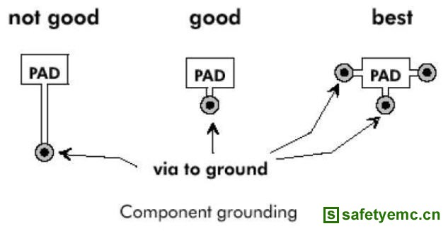

导读：去耦电容放置在负载器件的电源和地之间，主要有两个作用：一方面是作为负载器件的蓄能电容，避免由于电流的突变而使电压下降，相当于滤除纹波；另一方面旁路掉该器件的高频噪声。在很多设计中，去耦电容通常使用容量
去耦电容放置在负载器件的电源和地之间，主要有两个作用：一方面是作为负载器件的蓄能电容，避免由于电流的突变而使电压下降，相当于滤除纹波；另一方面旁路掉该器件的高频噪声。在很多设计中，去耦电容通常使用容量相差一个数量级以上的两个甚至更多的电容并联，为的是提高电源供应电路从高到低频的瞬态响应。
理论上电容越大，低频的通过性越好，滤波效果也越好，但电容器的原理和结构也决定了大容量电容的分布参数，如等效电感和等效电阻都明显高于小电容，同时PCB走线也存在一定的分布参数。只是这些分布参数的在低频时表现并不明显，所以布局安排上可以将大容量电容放得远离有源器件一些。
随着工作频率升高，滤波器件的感抗和PCB线路感抗开始呈现，且频率越高感抗越大，对供电回路的纹波影响越明显，因此需要选用感抗小的小容量电容提供良好的去耦。同时还应缩短滤波电容两端到负载的电源与地的距离，尽可能将去耦电容和负载器件放置在同一层。为降低EMI，也应尽量减小电源线和地回路之间包围的面积。
以下图例都是说明如何设计良好的去耦电路拓扑结构和布线策略。
图1各种布线方式对去耦质量的影响

图2 两种拓扑结构的对比
图3 多器件时两种去耦布线的对比
图4 如何减小电源和地回路所包围的面积
